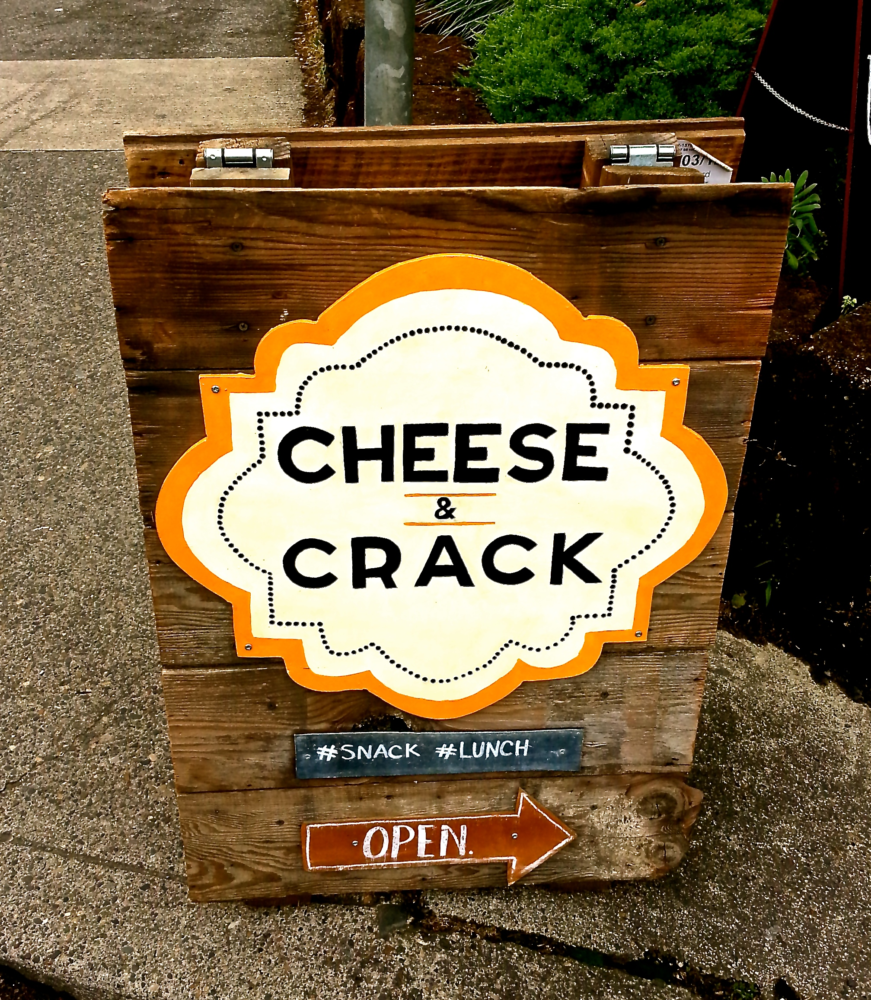

Orci varius natoque
Orci varius natoque penatibus et magnis dis parturient montes, nascetur ridiculus mus. In vel egestas neque. Sed nec pellentesque nisl, sed porttitor purus.
Curabitur imperdiet
- Phasellus scelerisque sem sem, eu rutrum magna gravida et. In hac habitasse platea dictumst.
- Cras vehicula finibus orci, eu commodo massa. Suspendisse condimentum rutrum augue a dapibus. Proin luctus
hendrerit lectus ultrices luctus.